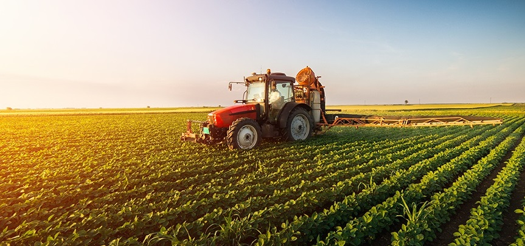

Bem-vindo ao Agro Forte
Agronomia: a ciência que alimenta o mundo A agronomia é muito mais do que uma área do conhecimento — é a ponte entre a natureza e a mesa de cada pessoa. Reunindo saberes das ciências biológicas, exatas e sociais, ela estuda, planeja e aprimora os sistemas de produção agrícola, garantindo que alimentos, fibras e energia cheguem à sociedade de forma eficiente, sustentável e responsável. Em um mundo que enfrenta desafios crescentes como as mudanças climáticas, o crescimento populacional e a escassez de recursos naturais, a agronomia se posiciona como uma das disciplinas mais estratégicas do século XXI. É ela que orienta o uso inteligente do solo, da água e da biodiversidade, transformando o campo em um ambiente de inovação constante.
